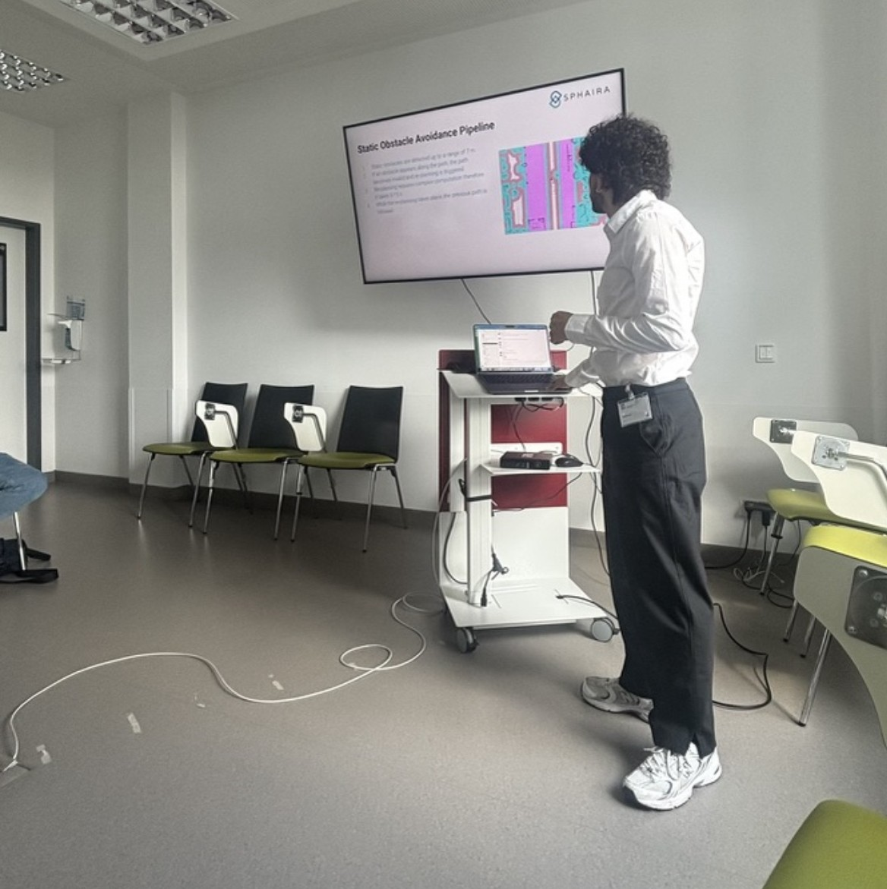
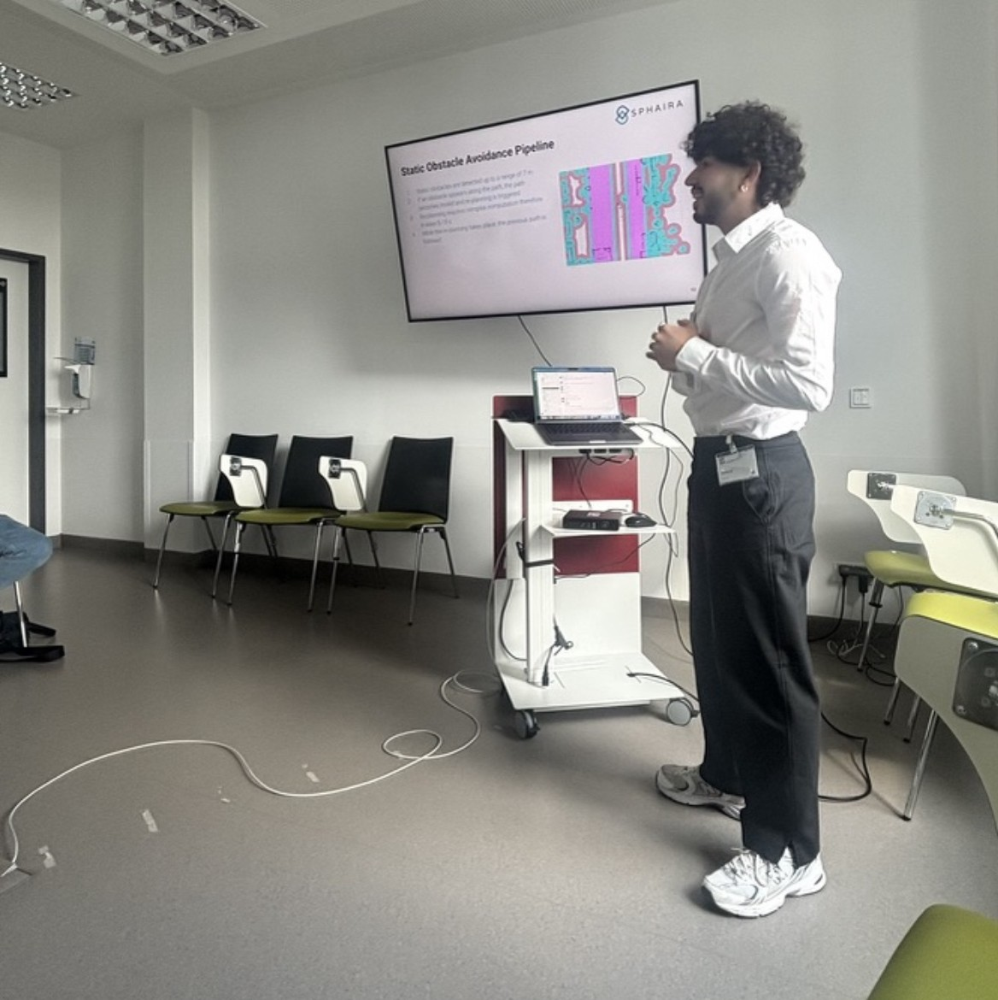
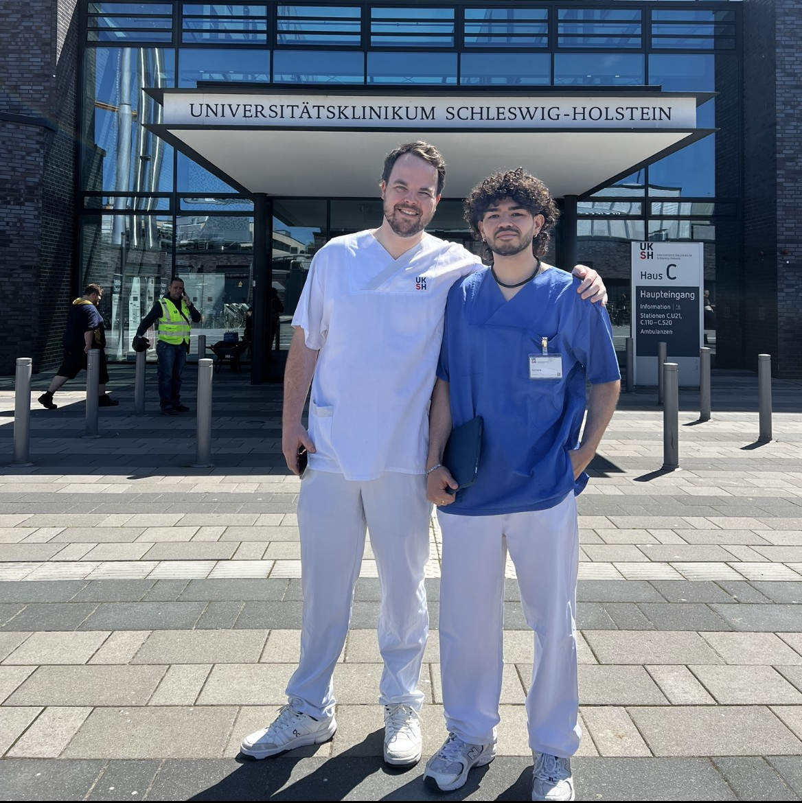

Autonomous patient transport shuttle for hospitals
At Sphaira GmbH I worked as a robotics engineer on the development of an autonomous patient transport shuttle, designed to solve a deep and costly problem in hospitals: getting patients to the right place at the right time without delays. Every day, surgeries and medical appointments are postponed or rescheduled because porters are overloaded, transports are late, or coordination breaks down, which translates into huge time and money losses for hospitals and a very stressful experience for patients.
Our goal with this project was to build, from scratch, a fully autonomous patient transport vehicle capable of safely moving patients through real hospital environments, side by side with staff, visitors, and other robots.This required combining reliable autonomy (localization, mapping, planning, obstacle avoidance) with strong safety, robust system architecture, and an intelligent understanding of crowded social environments like corridors, waiting areas, and operating room zones.

Presenting shuttle system to hospital directors

Explaining navigation & safety features

On-site at client hospital: analyzing transport operations to adapt robot workflowsMedia day: showing Moby robot & explaining functionalities during press report
My role and responsibilities
From the very beginning I was involved in the core engineering decisions, starting with the selection of the sensors and computing hardware that the autonomous shuttle would need.I evaluated different configurations of 3D LiDARs, solid-state LiDARs, depth and RGB cameras, radars, range sensors, and IMUs, and also contributed to choosing the onboard computers that would process all this data in real time inside the hospital.
Once the hardware baseline was defined, I took ownership of the complete navigation stack, building it essentially from scratch on top of ROS2 and modern navigation frameworks.This included localization, mapping and SLAM, path planning, sensor fusion, obstacle avoidance, and the integration of third‑party localization and safety software that had to work together as a single coherent system in a medical environment.
Social navigation and intelligent behavior
Hospitals are extremely crowded and sensitive environments: you have patients on stretchers, nurses rushing to emergencies, visitors standing in groups, and cleaning staff moving equipment. For this reason I later took over what we called the social navigation layer, whose purpose is to make the robot navigate not only safely but also intelligently and respectfully around people.
To address this, we started integrating vision-language models (VLMs) and vision-language-action models (VLAs) into the navigation pipeline.The idea is to analyze the scene, understand where people are, how they are moving, what type of situation is happening (e.g., someone blocking a doorway versus a passing crowd), and then feed this high-level understanding into the navigation stack so the robot can choose more human‑like and context‑aware behaviors.
System architecture, cloud and fleet management
Besides the onboard autonomy, I also acted as lead robotics engineer for the system architecture of the whole solution, including cloud services and fleet management.I designed diagrams of how robots, hospital IT systems, and cloud components would communicate, and then turned these designs into working systems, making sure we used robust, secure communication methods and followed hospital requirements for safety and data protection.
This involved defining and implementing APIs and endpoints together with our customers, integrating with existing hospital software, and designing the fleet manager that monitors and coordinates multiple robots at once.Through this work I gained strong experience in system design, planning, team leadership, and the full process of taking a medical robotics product from a rough prototype to a certifiable, maintainable and demonstrable system.
Demos, certification journey and communication
During my time on this project I was responsible for many internal and external demos, including a key demonstration in one of our client hospitals where we showed autonomous navigation with static obstacle avoidance in real hospital corridors.This demo was completed successfully and represented an important milestone, because it helped trigger the first revenue from this product line for the company, something I am extremely proud of.
I was also deeply involved in the certification journey, preparing documentation, safety analyses, and test protocols to meet medical device standards. This included risk assessments, fail-safe mechanisms, and compliance with hospital cybersecurity requirements, advancing the shuttle towards full regulatory approval.
Hospital demo: Autonomous navigation with static obstacle avoidance in real corridors